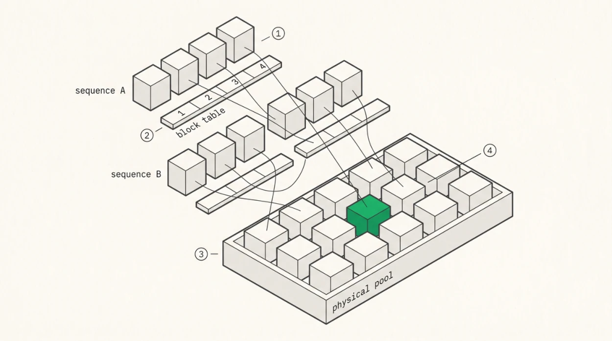

Paged KV and Block Tables
The paged KV idea
The naive layout stores each sequence’s KV cache contiguously, pre-allocated to the maximum sequence length, which wastes memory twice over. Once for capacity a sequence never uses, and again through fragmentation as sequences of different lengths arrive and depart.
PagedAttention (Kwon et al., SOSP 2023) borrowed the operating system’s answer, which is pages . The logical KV cache, the thing the kernel indexes, becomes a sequence of fixed-size blocks, while the physical cache is a pool of blocks handed out by an allocator, and a per-sequence block table maps between them.
block_table = [5, 2, 8, 1]
logical block 0 → physical block 5
logical block 1 → physical block 2
logical block 2 → physical block 8
logical block 3 → physical block 1With a block size of 16 tokens, a 100-token sequence occupies 7 blocks and wastes at most 15 token slots, rather than reserving space for 32,768.

O
1Each sequence sees a contiguous run of logical blocks. That is the fiction the attention kernel is written against.O
2The block table is the page table. One integer lookup per block of 16 to 64 tokens, plus the loss of the compiler’s ability to prove consecutive blocks are contiguous, which is what actually costs you.O
3Physical blocks come from one shared pool, so any free block satisfies any request and external fragmentation essentially disappears.O
4Two sequences pointing at the same physical block is prefix sharing. It works because the cache is append-only, so a shared block can be extended but never mutated.
The paged attention kernel
The kernel changes modestly. It receives the block table and sequence length as arguments, loads the physical index for each logical block, computes the physical address, and reads KV from there. Online softmax and combine are untouched.
The indirection costs one integer load per block of 16 to 64 tokens plus address arithmetic, and, less obviously, it costs the compiler’s ability to prove that consecutive blocks are contiguous, which is what actually hurts.
What paging really costs
Here’s the claim that gets repeated most often, and it’s worth correcting carefully because the wrong version is everywhere.
Paging is not free. The vLLM authors and subsequent analyses measured PagedAttention’s decode kernel at 20 to 26% slower than the equivalent contiguous FasterTransformer kernel, attributed to blocktable lookups and extra branches, and paged prefill kernels in FlashAttention-2 and FlashInfer have been measured at up to 37% and 42% slower than their non-paged counterparts. That work, the vAttention
line, argues you can keep paging’s memory benefits while using contiguous virtual memory and the driver’s own page tables, precisely to win that overhead back.
So the correct statement is that paging costs on the order of 20 to 40% of kernel time and buys nearelimination of KV memory waste, which the vLLM authors measured as a 2 to 4× end-to-end throughput improvement over the prior state of the art at the same latency. For a server that trade is overwhelmingly worth taking, since throughput improves even though the kernel got slower, but a single-sequence benchmark will show paging as a pure loss, and it’s worth knowing which of those two situations you’re measuring.
Larger blocks reduce the overhead through fewer lookups and longer contiguous runs, at the cost of more internal fragmentation. Block size 16 was the original default, 32 to 128 are common now, and engines increasingly tune it per deployment.
Combining paging with GQA and quantisation
The real production decode kernel does all three at once. Paging gives the physical address of each KV block, GQA reads each KV head once and broadcasts across its group of query heads, and quantisation stores KV in FP8 or FP4 with per-token scales converted in the datapath.
The three interact, which is why writing them separately and composing at the end reliably produces a kernel that’s correct and slow. Quantisation scales have to live alongside the data or in a parallel array indexed the same way, which becomes an extra indirection if the layout is wrong. GQA broadcast wants the group’s query heads resident in registers while the shared KV block streams past, competing for register file with the prefetch depth of Chapter 10. The layout has to be designed for all three together.
Kernel paging against manager paging
Two different things share the name and it’s worth separating them. Kernel-level paging, which is this chapter, means the attention kernel follows a block table so the cache needn’t be contiguous, and that’s a kernel technique. Memory-manager paging, which is Chapter 13, is the allocator that owns the block pool, hands blocks to sequences, reclaims them, shares them, and evicts under pressure, and that’s the systems innovation.
A kernel can consume block tables with no manager behind it, and hard-coding one for a single sequence is exactly how you bring the kernel up. But the value of paging comes from the manager.
Implementation in Rust
pub struct BlockTable {
entries: Vec<u32>, // logical block index -> physical block index
block_size: u32, // tokens per block
}
rust
impl BlockTable {
pub fn physical_block(&self, logical: u32) -> Option<u32> {
self.entries.get(logical as usize).copied()
}
pub fn blocks_for(&self, seq_len: u32) -> u32 {
seq_len.div_ceil(self.block_size)
}
}Returning Option rather than indexing directly is deliberate. An out-of-range logical block is a bug that has to be caught on the host, because on the GPU it becomes an out-of-bounds read into whatever else lives in VRAM, and with fault handling configured for performance that can be a device reset. A None on the host is free, a VM fault on the device is a node incident.
Key Concept
Kernel-level paging is an indirection through a block table. It isn’t free, with measurements putting paged decode kernels 20 to 26% behind contiguous equivalents and paged prefill up to 42% behind, but it buys near-zero memory waste, which is a much larger win at the system level. Paging, GQA broadcast, and quantisation have to be designed into the kernel’s data layout together, because bolted on separately they compose into something correct and slow.
Exercises
For block sizes 16, 32, 64, and 128, compute expected internal fragmentation for a workload with sequence lengths uniform in [100, 4000], and the block-table size for a 1M-token sequence. Recommend a block size and defend it.
Explain why a single-sequence microbenchmark makes paging look strictly bad while a server benchmark makes it look strictly good. What should you measure to capture both?
Build: take your Chapter 10 kernel and add block-table indirection. Measure the slowdown at several block sizes and compare with the published 20 to 26% figure.